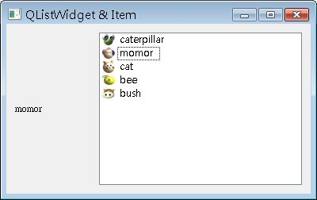
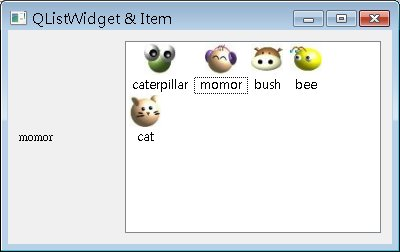

QListWidget可以顯示一個項目清單，清單中每個項目是QListWidgetItem的實例，每個項目可以設定文字與圖像，以供使用者進行項目的選擇，以下來示範一個簡單的例子：
#include <QApplication>
#include <QHBoxLayout>
#include <QLabel>
#include <QListWidget>
int main(int argc, char *argv[]) {
QApplication app(argc, argv);
QWidget *window = new QWidget;
window->setWindowTitle("QListWidget & Item");
QLabel *label = new QLabel;
label->setFixedWidth (100);
QListWidget *listWidget = new QListWidget;
listWidget->insertItem(0, new QListWidgetItem(
QIcon("caterpillar_head.jpg"), "caterpillar"));
listWidget->insertItem(1, new QListWidgetItem(
QIcon("momor_head.jpg"), "momor"));
listWidget->insertItem(2, new QListWidgetItem(
QIcon("bush_head.jpg"), "bush"));
listWidget->insertItem(3, new QListWidgetItem(
QIcon("bee_head.jpg"), "bee"));
listWidget->insertItem(4, new QListWidgetItem(
QIcon("cat_head.jpg"), "cat"));
QObject::connect(listWidget, SIGNAL(currentTextChanged (const QString &)),
label, SLOT(setText(const QString &)));
QHBoxLayout *layout = new QHBoxLayout;
layout->addWidget(label);
layout->addWidget(listWidget);
window->setLayout(layout);
window->show();
return app.exec();
}
程式中設定了兩個元件，QLabel與QListWidget，並連接QListWidget的currentTextChanged()及setText()，當您選擇清單中的項目時，QLabel會顯示目前清單中所選中的項目。QListWidgetItem還可以使用setCheckState()方法設定是否具備核取方塊。
下圖為執行時的畫面：

您也可以設定QListWidget的setViewMode()，它繼承自QListView，可以設定QListView::ListMode、
QListView::IconMode，設定為QListView::IconMode可以以大圖示顯示，例如：
listWidget->setViewMode(QListView::IconMode);
設定為大圖示的畫面如下所示：

|
|